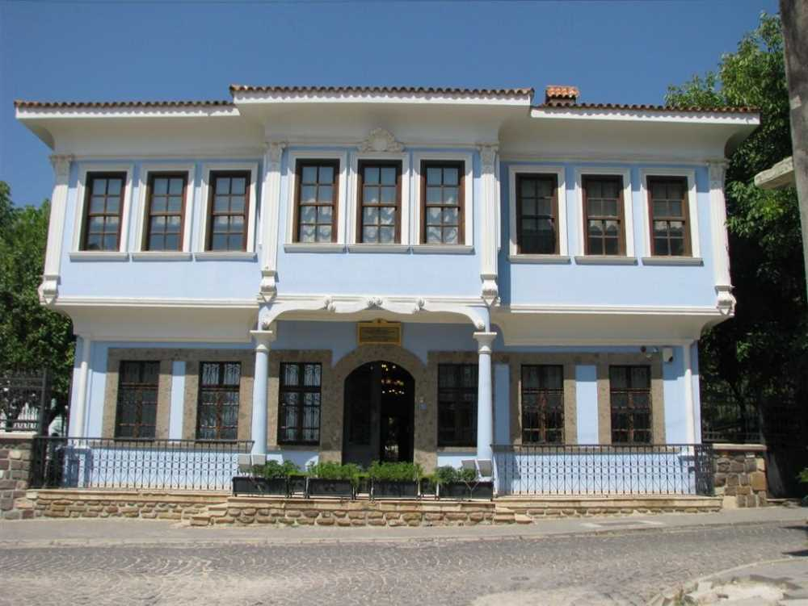
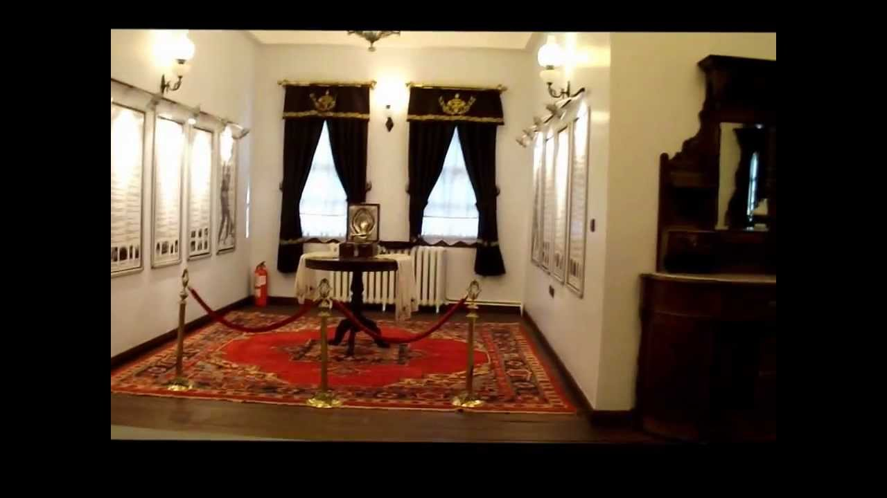

Bu yapıya Atatürk Evi de denmektedir. Bunun sebebi, Kurtuluş Savaşı'nın cereyan ettiği dönemlerde karargah binası olarak kullanılması ve Atatürk'ün bir süre burada ikamet etmiş olmasıdır.
|  | Uşak'ın tarihi binalarından biri olan Kaftancızade Konağı, günümüzde Etnografya Müzesi olarak hizmet vermekte. Şehrin hem tarihi mimarisini hem de kültürel yaşantısını gözlemleyebileceğiniz konak, il merkezine bağlı olan Bozkurt Mahallesi'nde bulunuyor. |
|
Aynı zamanda Yunan Ordusu Başkomutanı Trikopis ile Atatürk bu binada görüşmüştür. Trikopis esir düşmesine rağmen bu konakta Atatürk'ün misafiri olmuştur. |
 |
Kaftancızade Konağı, 1973 yılında kamulaştırılmış ve restore edilmiştir. 1978 yılında ise müze olarak hizmet vermeye başlamıştır. Müzede yöresel kıyafetler, kilimler, eski silahlar ve halılar sergilenmekte. Üst katı Atatürk Müzesi olarak düzenlenmiş olup, bu katta Atatürk'ün yatak odası ve kişisel eşyaları mevcuttur.